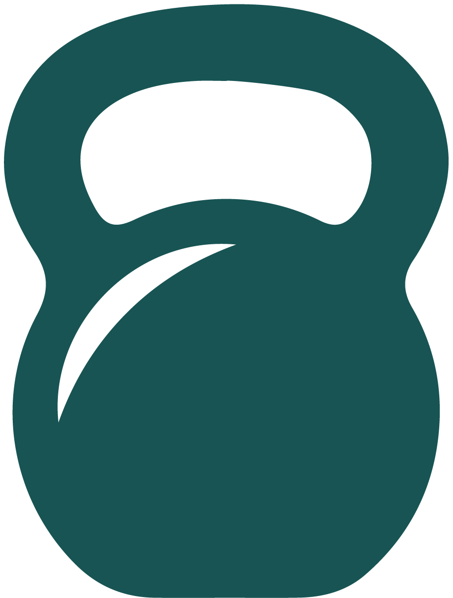

SOMOS RUFIT!
Estamos encantado de darles la bienvenida a esta comunidad de rufianes del fitness y la salud. Los invito a conocer los innumerables beneficios que el entrenamiento físico puede aportar a nuestras vidas.
Motivos para Entrenar:
Bienestar Físico y Mental El ejercicio regular no solo fortalece nuestros músculos y mejora nuestra resistencia, sino que también tiene un impacto significativo en nuestra salud mental. Nos ayuda a reducir el estrés, mejorar el estado de ánimo y aumentar la sensación de bienestar general. El ejercicio regular es una herramienta invaluable para controlar el peso corporal. Nos ayuda a quemar calorías, aumentar el metabolismo y mantenernos en un rango de peso saludable.
Salud Cardiovascular: El entrenamiento cardiovascular, como correr, nadar o andar en bicicleta, es fundamental para mantener un corazón sano y prevenir enfermedades cardiovasculares. Nos ayuda a mejorar la circulación sanguínea, reducir la presión arterial y aumentar la resistencia cardiovascular.
Fuerza y Flexibilidad: El entrenamiento de fuerza no solo nos ayuda a desarrollar músculos fuertes y tonificados, sino que también mejora nuestra postura, previene lesiones y aumenta nuestra capacidad funcional en la vida diaria. Combinado con ejercicios de flexibilidad, nos ayuda a mantenernos ágiles y móviles a medida que envejecemos.
Autoestima y Confianza: El logro de metas y objetivos de fitness nos proporciona un impulso significativo en nuestra autoestima y confianza en nosotros mismos. A medida que superamos desafíos físicos, nos demostramos a nosotros mismos de lo que somos capaces, lo que se refleja en todas las áreas de nuestras vidas.
Socialización y Apoyo: Ser parte de un grupo de entrenamiento nos brinda la oportunidad de conectar con personas que comparten nuestros intereses y objetivos. Nos inspiramos mutuamente, nos apoyamos en los momentos difíciles y celebramos juntos nuestros logros, creando así una red de apoyo invaluable.
Entrenar no se trata solo de mejorar nuestro aspecto físico, sino de invertir en nuestra salud y bienestar a largo plazo. Cada sesión de entrenamiento nos acerca un paso más hacia una vida más saludable, activa y plena.
Así que los invito a todos a comprometerse con su viaje de fitness, a desafiarse a sí mismos y a disfrutar del proceso. Juntos, podemos alcanzar nuestras metas y convertirnos en la mejor versión de nosotros mismos. ¡Gracias por unirse a esta emocionante aventura de entrenamiento!